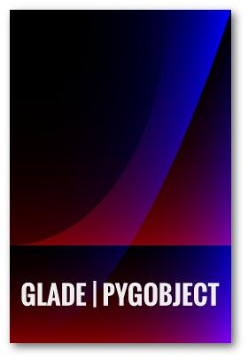

Das Geheimnis der Sphinx
Inhalt
Ob ich die Tutorial-Artikel nicht als E-Book zusammenfassen könnte, wurde ich gefragt. Ich kann.
Folgt mir auf meiner abenteuerlichen und actiongeladenen Reise, in dem mit Kanonen auf Spatzen geschossen wird und ich den Geheimnissen der rätselhaften Sphinx auf die Spur komme.
{kind=link}
Vorüberlegungen
Die GitHub Page läuft mit dem statischen Seitengenerator Nikola, die standardmäßig RestructuredText-Quelldateien parst. Da kommt ein Dokumentationstool, das diese ebenso verarbeiten kann und die Ausgabe in verschiedene Formate ermöglicht, absolut gelegen. All das bietet Sphinx.
Die naheliegende, sich aber möglicherweise als naiv herausstellende, Überlegung war nun, die bestehenden Blogartikelquelldateien so vorzubereiten, dass sich mit wenig Aufwand gewünschte Ausgabeformate immer wieder neu generieren lassen.
- Sphinx bietet die Builder für
- EPUB, dem offenen E-Book-Standard, nativ von allen E-Reader-Fabrikaten außer den Kindles unterstützt
- PDF, das per LaTeX (verschiedene Engines verfügbar) erzeugt wird
Sphinx
Initialisierung
Nach der Installation erstellt man das Projektverzeichnis und initialisiert mit
$ sphinx-quickstart
das Grundgerüst. Fast alle Fragen können auf der Voreinstellung belassen werden. Im Projektverzeichnis befindet sich nun die Konfigurationsdatei conf.py sowie das Root-Dokument index.rst.
Die Dateien lassen sich nun nach dem Muster make Builder erzeugen, die in den Unterverzeichnissen _build/builder befinden:
$ make epub $ make latexpdf
conf.py
Epub
#HTML-Dateien vor dem Inhalt der index.rst einfügen epub_pre_files = [('info.xhtml', 'Info')] html_additional_pages = {'info': 'info.html'} #Titel erzeugen epub_cover = ('_static/cover.png', 'epub-cover.html') #Stichwortverzeichnis auslassen epub_use_index = False #Bezeichnung der Ausgabedatei epub_basename = output_basename #für die Generierung der info.xhtml benötigt, da sonst None html_last_updated_fmt = '%d. %B %Y'
LaTeX
Für die PDF-Ausgabe müssen eine Reihe von TeXLive-Paketen installiert sein (siehe Dokumentation). Als Alternativen seien an dieser Stelle das in Calibre integrierte Konvertierungstool ebook-convert und epub2pdf genannt.
#Papierformat (Standard ist US-Letter), leere Seiten vermeiden latex_elements = { 'papersize': 'a4paper', 'classoptions': 'oneside,openany' } #Logo auf der Titelseite latex_logo = '_static/logo.png'
Sonstiges
- Pygments
- Syntax-Highlighting, ebenfalls von Nikola unterstützt, hier wie dort wähle ich das Theme "borland"
- Bezeichnung der Ausgabedatei
- Der Dateiname lässt sich für die verschiedenen Builder jeweils festlegen. Um für alle verwendeten Builder jeweils die gleiche Bezeichnung zu nutzen, verwende ich hier die eigene Variable output_basename. Diese wird demzufolge nicht von Sphinx unterstützt und nur innerhalb der conf.py verwendet (in den Variablen htmlhelp_basename, latex_documents, texinfo_documents, epub_basename).
pygments_style = 'borland' output_basename = 'gladepytutorial'
_static
In diesem Ordner befinden sich Stylesheets, Bilder und Skripte, die nach den vorgegebenen Dateien geladen werden. So kann man lokale individuelle Stylesheet-Anpassungen vornehmen, ohne Themes selbst zu modifizieren. Hier befinden sich eine angepasste pygments.css, cover.png (Epub) und logo.png (PDF).
_templates
Analog zu _static befinden sich hier individuelle Templates. Diese werden standardmäßig mit der Template-Engine Jinja2 betrieben. Hier befindet sich info.html, die in der Epub-Ausgabe Verwendung findet.
Epub: zusätzliche Dateien einfügen
Sphinx bietet mit epub_pre_files (und analog epub_post_files) die Option, zusätzliche und nicht zur eigentlichen Dokumentation gehörenden (X)HTML-Dateien zum Epub hinzuzufügen. Diese müssen allerdings zunächst als zusätzliche HTML-Seiten generiert werden. Dafür wird in der conf.py die Variable html_additional_pages entsprechend gesetzt [1].
| [1] | Es hat mich einen (EINEN!) Tag gekostet dies herauszufinden... |
index.rst
Dies ist das Hauptdokument, das von jedem Sphinx-Builder geparst wird. Als reguläre reST-Datei kann sie beliebig viel Inhalt aufnehmen. Es ist allerdings zu empfehlen und im Normalfall vermutlich sowieso bereits der Fall, das Dokument in mehrere Dateien aufzuteilen. Sphinx stellt dafür die eigene toctree-Directive zur Verfügung.
.. toctree:: :maxdepth: 1 :numbered: :caption: Inhalt tutorial-reihe-glade ...
Dateien außerhalb von toctree werden mit der include-Directive hinzugefügt.
Es ist auch möglich, Inhalte nur von bestimmten Builder berücksichtigen zu lassen:
.. only:: latex .. include:: info.rst
Bonus: Mobi
"Ich habe doch einen Kindle und hätte auch gern so ein E-Book!"
Aber klar doch.
KindleGen
Amazon möchte zwar keine Epubs [2] unterstützen, aber sie bieten mit KindleGen ein Tool an, welches diese in die eigenen Formate (KF8, Mobi) überführt.
Auf diese Weise lässt sich mit
$ kindlegen input.epub
eine Mobi-Datei erzeugen.
| [2] | oder Google-Apps... |
Problem: Encoding
Das aus dem Epub erstellte E-Book im Mobi-Format hat ein Darstellungsproblem mit einigen (Sonder-)Zeichen.
Abhilfe schafft hier die Zeile
<meta http-equiv="Content-Type" content="text/html; charset=UTF-8" />
an Stelle von
<meta charset="utf-8" />
innerhalb des HTML-Heads. Sphinx bietet dafür die meta-Directive, die allerdings für jede Datei gesetzt werden muss:
.. meta:: :http-equiv=Content-Type: text/html; charset=UTF-8
Nikola
Das Resultat des ersten Durchlaufs von Sphinx mit der Übersichtsseite und drei Artikeln lässt vorsichtig optimistisch werden. Trotzdem gibt es an diversen Stellen Optimierungsbedarf:
-
Die Nikola-eigenen Kurzverweise (slug) funktionieren nicht und erfordern eine Konvertierung in ":ref:"erenz.
-
Die Artikelüberschrift ist kein Gliederungselement und fehlt demzufolge im Inhaltsverzeichnis
-
Nikola-eigene Directives verursachen Fehler. Konvertierung von
- thumbnail -> image
- listings -> literalinclude
-
relative Pfade in image-Directives anpassen
-
Inhaltsverzeichnisse in den Artikel überflüssig
-
"Kommentieren auf G+"-Button entfernen
-
Für die Generierung der Mobi-Datei muss jede Datei eine Meta- Anweisung erhalten
Für eine zufriedenstellende Ausgabe ist es also erforderlich, die Ausgangsdateien hinsichtlich dieser Punkte per Skript zu modifizieren.
Automatisierung
Das ist er, der Elefant im Raum.
Sphinx läuft und die index.rst ist eingerichtet. Die Mission besteht nun aus folgenden Teilaufgaben:
- Sphinx soll sich der aktuellen Dateien der GitHub Page bedienen.
- Diese Dateien sollen gemäß der oben genannten Punkte bearbeitet werden.
- Sphinx soll ein Epub und ein PDF erzeugen.
- KindleGen soll ein Mobi erzeugen.
- Die Dateien sollen im entsprechenden Ordner im GitHub Page-Verzeichnis abgelegt und deployt werden.
Let's do this.
Skript
Die größte Arbeit ist bereits erledigt: die Einrichtung von Sphinx und die Problemerfassung. Das Skript selbst arbeitet nun die oben genannten Punkte ab. Weiterhin gibt es der Übersichtlichkeit halber zwei weitere Dateien. Es befinden sich nun im Sphinx-Projektverzeichnis folgende neue Dateien:
- nibook.py: sammelt, kopiert, bearbeitet die Quelldateien, erstellt die E-Books und füttert die GitHub-Page (Code)
- index.lst: Liste von Dateinamen (ohne Endung), die im Dokument enthalten sein sollen
übersicht artikel1 artikel2 artikel5
- index.tmpl: aus dieser und der index.lst wird die index.rst generiert
.. generated by nibook, posts will be inserted after ".. include-start" .. some text documentation master file, created by sphinx-quickstart on Thu Oct 26 20:26:54 2017. You can adapt this file completely to your liking, but it should at least contain the root `toctree` directive. .. meta:: :http-equiv=Content-Type: text/html; charset=UTF-8 .. only:: latex .. include:: info.rst **************************** Glade-Tutorial mit PyGObject **************************** .. toctree:: :maxdepth: 1 :numbered: :caption: Inhalt :name: mastertoc .. include-start